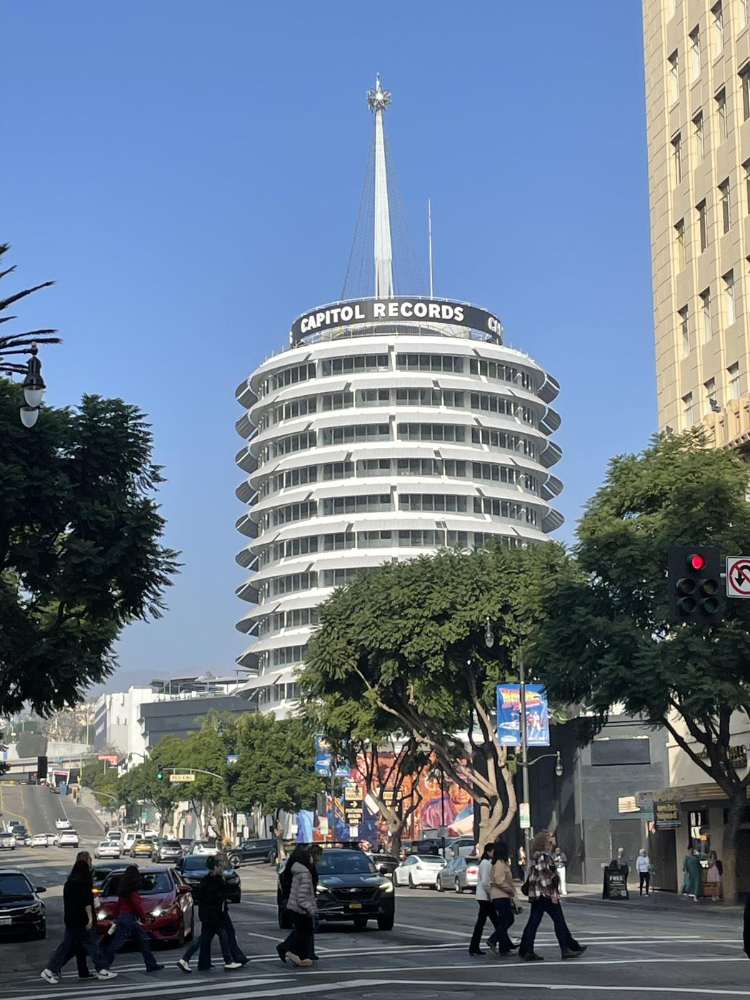

Viaje 1 · 2 al 5 de diciembre de 2024
Dallas y Los Ángeles
Escala en Dallas, el Museo de Historia Natural, una ruta de trabajo por el Inland Empire, Universal Studios y un último día de Hollywood, guitarras y luces de Navidad.
313fotos
9.850 kmen avión (ida)
≈ 325 kmpor tierra
≥ 12,9 kma pie
502 mlugar más alto
Sin fotos · armado con el historial de ubicaciones
Viaje 2 · 5 al 12 de enero de 2025
Nueva York y Long Island
Una semana de frío ártico: un día completo por Manhattan a pie y en metro, cuatro días de trabajo en Long Island con un turno de noche y una tarde en Brooklyn.
18paradas
16.500 kmen avión (ida y vuelta)
≈ 283 kmpor tierra
5,1 kma pie
107 km/hmáxima en auto
Las dos rutas desde Santiago
Viaje 1: Santiago → Dallas → Los ÁngelesViaje 2: Santiago ⇄ Nueva York